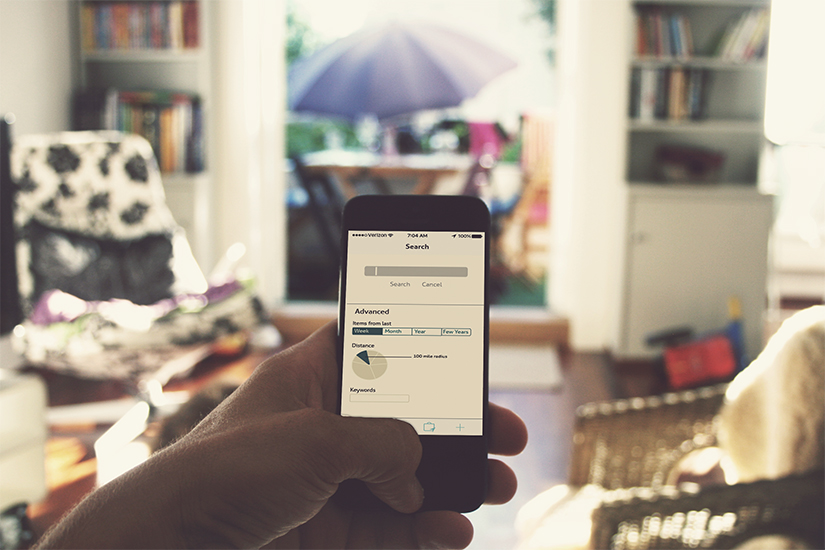
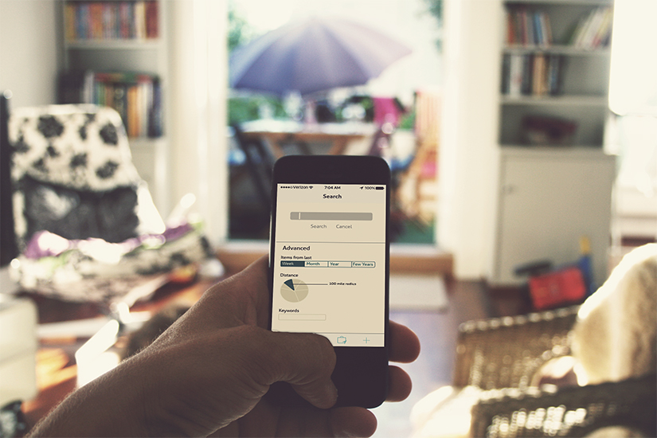
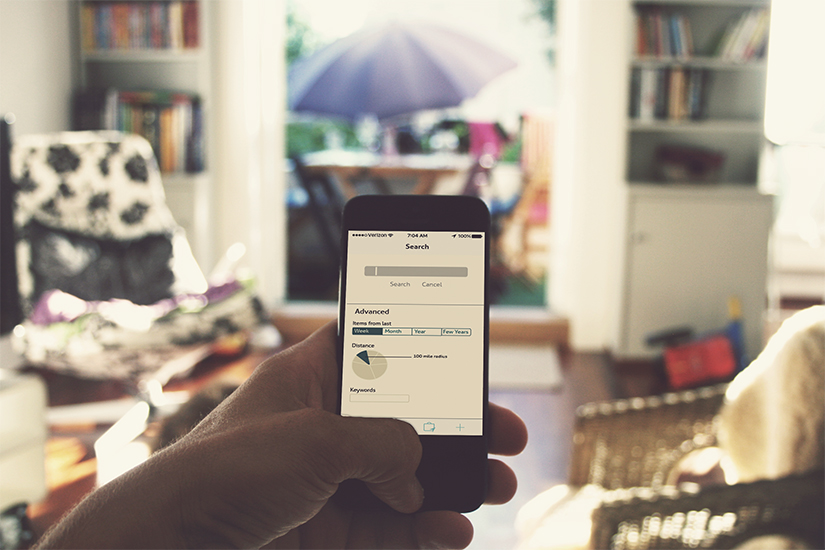
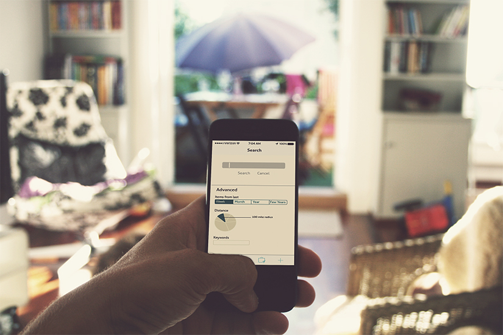
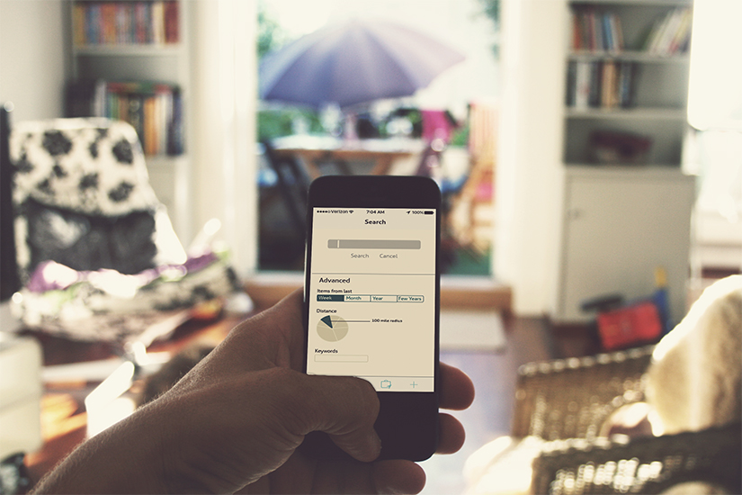
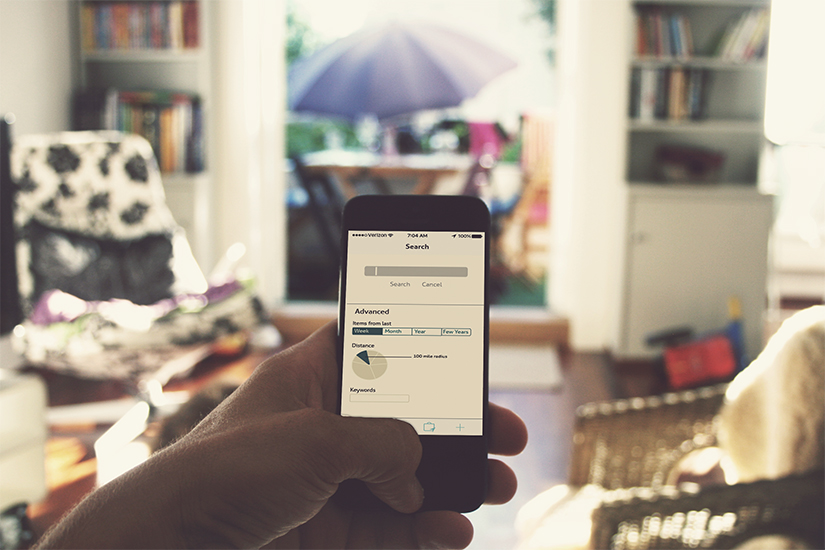

Derived by my 100 Things project; Post tracks your physical mail that exists within real time. With the use of tracking devices on envelopes, cards, and stamps produced by the company you can download the application and keep track with your mail. The app lets you filter through options of rating, name, distance, year, content, event, and reasons for keeping. You can keep track with when things were written, mailed, and delivered to you.